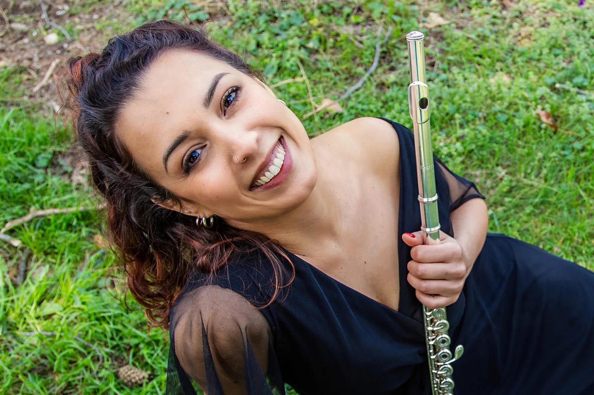
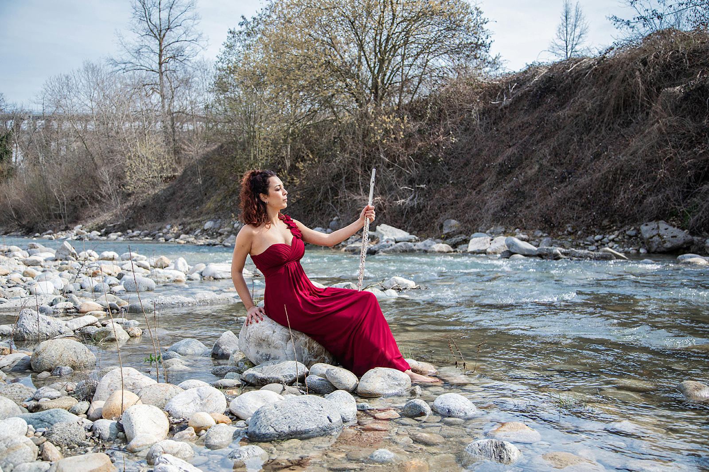

Musicoterapia
La musica come esperienza di ascolto e relazione, nei percorsi rivolti a bambini, adolescenti e adulti.
Chi sono
Sono Yasmin Khreiwesh, musicoterapista, flautista e insegnante di flauto. Questo è il luogo in cui si incontrano le tre anime del mio lavoro.
La musica come esperienza di ascolto e relazione, nei percorsi rivolti a bambini, adolescenti e adulti.
L’attività artistica e le lezioni di flauto traverso: il suono, la pratica e il piacere di condividere la musica.

Il mio percorso nasce dalla formazione musicale: nel 2011 mi laureo in Conservatorio in flauto traverso. Il desiderio di esplorare nuove dimensioni della musica mi conduce poi alla musicoterapia: conseguo la specializzazione nel 2015 e un Master in Musicoterapia in area medica nel 2016.
Insegno flauto traverso in contesti pubblici e privati e lavoro come musicoterapista libera professionista. Accanto a queste attività continuo a esibirmi in formazioni orchestrali, nella musica da camera e nel pop.
Per me queste tre dimensioni sono linguaggi complementari. La formazione musicale sostiene il lavoro didattico e terapeutico; la musicoterapia affina la mia capacità di ascolto e l’attenzione alle esigenze di ciascuno.
Coltivo anche un percorso di crescita personale e spirituale, approfondendo pratiche legate alla presenza e alla respirazione. Questa ricerca arricchisce il mio modo di vivere e condividere la musica.
Sono una persona curiosa e solare, sempre in formazione. Nell’insegnamento del flauto e nella musicoterapia costruisco percorsi su misura, attenti ai bisogni, ai desideri e alle potenzialità di ogni persona.
Per me, la musica è un universo dalle molte sfaccettature: un’arte da coltivare, un linguaggio da condividere e uno spazio in cui incontrarsi.

Laurea magistrale in flauto traverso, Conservatorio Ghedini di Cuneo (2011).
Diploma in musicoterapia, Centro per le Artiterapie di Lecco (2015).
Master di I livello in musicoterapia in area medica, Università di Pavia (2016).

Per un percorso, una lezione o una collaborazione musicale.
Contatta Yasmin